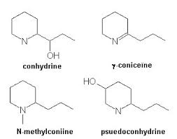
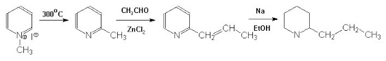

Non di sole sintesi vive l'uomo... e così talvolta mi soffermo a commentare a modo mio qualche libro che leggo.
Se poi quello in oggetto è un libro di "letteratura" (di qualunque genere si tratti) nel quale affiora qualche spunto di chimica allora è una festa... per esempio tempo fa mi sono divertito a fantasticare su quel capolavoro gotico che è Jeckyll & Hyde, e così via.
Per restare in tema "giallo", l'ultimo volumetto che mi è capitato sotto gli occhiali è "Il ritratto di Elsa Greer" di Agatha Christie.
E' uno dei numerosi gialli che la celebre e prolifica autrice sfornava con cadenza annuale, scritto nel 1942 col titolo originale di Five little pigs e dal quale è stato anche tratto un film nel 2003.
Dato che nel libro l'azione criminosa si basa su un avvelenamento, sentite qual'è la protagonista chimica del romanzo... nientemeno che la CONIINA!
Bella questa, da andarci a nozze!
Non in senso letterale, s'intende, dato che la coniina è il principio attivo della socratica cicuta, e tanto basta, tutti abbiam capito di cosa parliamo.
E' notevole, e lo dico a merito della Christie, che la scontatissima parola "cicuta" (hemlock) non viene nemmeno menzionata nel romanzo, ma sempre si cita il suo alcaloide principale, la coniina appunto.

[Apro una parentesi: sono convintissimo che questa scelta nell'uso dei termini, del tutto irrilevante per l'economia del romanzo, derivi dalla mentalità molto più "scientifica" del mondo anglosassone rispetto alla nostra; un criminale di un qualsiasi autore italiano MAI avrebbe adoperato la coniina (come parola) per avvelenare, ma semmai l'estratto di cicuta, o quant'altro...
Da noi, quando televisivamente ci si rivolge ad una platea ampia, è d'obbligo vergognarsi quando si usa un termine scientificamente accurato... ci si sente in dovere di scusarsi sempre con chi ascolta... per carità, non sia mai che si scenda in particolari troppo "tecnici".
Come odio profondamente questo stupido atteggiamento mass-mediatico!
Anzichè vergognarsi, si gode nel far permanere "scientificamente" ignoranti gli ascoltatori. Chiudo la parentesi].
---°°°OOO°°°---
Non dirò una parola su quest'erba velenosa (basta chiedere a Google e si è sommersi di notizie... a partire dal 399 a.C. in poi), se non che i suoi componenti altamente tossici sono, oltre alla coniina, la conidrina, la coniceina, la N-metilconiina e la pseudoconidrina.

Tutti sono derivati della piperidina... vi ricordate? E' una delle famose "Gemelle PI".
Da lunto di vista chimico la coniina è una 2-propilpiperidina, ed è anche storicamente interessante perchè è stata il primo alcaloide ad essere prodotto in laboratorio.
La sintesi fu fatta nel 1886 da Albert Lademburg, neanche a farlo apposta uno degi innumerevoli figli di quella eccezionale generatrice di chimici che fu la scuola tedesca della seconda metà del XIX° secolo.
Egli partì dalla metilpiridina (un chilo, mi pare di aver letto da qualche parte!), scaldando ad alta temperatura il metilpiridinio ioduro, trattando poi con paraldeide, riducendo infine con sodio e alcol, ed arrivando ad ottenere finalmente pochi grammi dell'alcaloide di sintesi in forma racemica.
Separandone poi per cristallizzazione frazionata il tartrato ottenne gli enantiomeri, e quindi un prodotto identico a quello naturale.
Ecco le reazioni originali semplificate:

Bravo Albert, il primo che taglia il traguardo passa alla storia!
Naturalmente altre sintesi furono ottenute più tardi secondo passaggi differenti, ma, nonostante la molecola sia apparentemente abbastanza semplice, la 2-propilpiperidina non è una sostanza facile da produrre in laboratorio.
La (+)Coniina è un liquido con p.e. 166° con un indice di tossicità LD50 di circa 7mg/Kg, quindi MOLTO velenosa; l'azione è curaro-simile, cioè paralizzante muscolare, ed è in questo modo che il nostro personaggio... - [omissis] - ha ammazzato il pittore Amyas Crale nel giallo di Agatha Christie che mi è servito di spunto per questo discorso.
Mi riprometto di prestare una specifica attenzione, tutte le volte che mi capiterà in primavera di bordeggiare luoghi incolti volgendo alla ricerca di qualche esemplare di Conium maculatum; chissà quante volte l'avrò vista di sfuggita questa cicuta, senza mai essere sicuro della sua identificazione, dato che queste grandi ombrellifere sono tutte simili e tutte puzzolenti se strofinate tra le dita.
Naturalmente non devo avvelenare nessun pittore... si fa questo ed altro solo per la scienza.